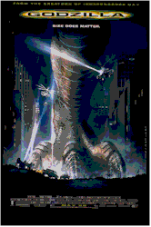
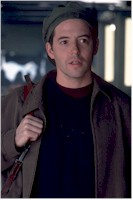
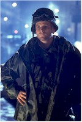
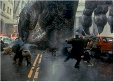

Contents | Features | Reviews | News | Archives | Store |
 |
|
| Movie Credits | Buy It! |
Godzilla
Review by Eddie Cockrell
Posted 22 May 1998
|  | Directed by Roland Emmerich Starring
Matthew Broderick, Jean Reno, Maria Pitillo, Screenplay by Ted Elliot and Terry Rossio, |
There's a moment in one of director Roland Emmerich's early movies, The Noah's Ark Principle (1985), in which an intrepid interstellar traveler stares intently at an essential piece of futuristic machinery that is quite obviously one of those early, cumbersome VCR's. It is precisely this juxtaposition – seriousness in the face of cheese – that has followed Emmerich through his meteoric rise to fame and made Independence Day (1996) such a winningly manipulative movie phenomena. Godzilla aims for the same tone, but is in the end undone by the yawning chasm between the uniformly one-dimensional warm-blooded characters and ponderous weight of the embarrassment of computer generated riches (CGR?) used to create the cold-blooded ones. Still, there are a couple of genuinely dazzling and inventive sequences, indicating that as with StarGate (1994) and ID4 (1996), just about the worst that can be said of Emmerich and producing/writing partner Dean Devlin is that they try too hard.
Clocking in at a staggering two hours and nineteen minutes (including the obligatory, interminable closing credits), this supercharged update of the original 1954 Japanese production that was generally considered to be a plea against use of the bomb (and was directed by Inoshiro Honda, who subsequently gave the world the peerless Mothra) preserves the central conceit that the raging radioactive beast is the result of nuclear testing gone very awry (d'you suppose that's why India just suspended their... naw...). As the monster heads towards Manhattan (something about a large island with lots of hiding places), the principals are introduced: Dr. Nick Tatopoulos (Matthew Broderick), an expert on biological mutations who is summoned from his studies of earthworms at the Chernobyl nuclear reactor site in the Ukraine and referred to throughout the film as "the worm guy"; Philippe Roache (Jean Reno), a French insurance investigator who eventually reveals a more urgent and incredible agenda; Audrey Timmonds (Maria Pitillo), an ambitious television reporter who takes advantage of a prior relationship with Nick (quite a coincidence, that) to uncover the monster's path and the American military's inept response to it; and Victor "Animal" Palotti (Hank Azaria), a wise-cracking cameraman whose combination of klutziness and chutzpah results in some harrowing close-ups.
The first half of the movie sets the stage for human interaction with Godzilla that never really occurs (the movie's too busy getting bogged down in military hardware), but it also paves the way for the film's two outstanding set pieces in the latter stages of the action. In the first, the small band of explorers uncovers Godzilla's nest in what's left of Madison Square Garden and must elude the marauding hatchlings (contrary to some early reports, the monster's ah, sexuality is never visually specified). And in a final, frenzied chase through the deserted streets of Manhattan (which has been evacuated, presumably eliminating the need for cluttering up the special effects shots with dead bodies) in what has to be the world's most indestructible Yellow Cab, the panicked quartet lure the monster to a final showdown on the equally sturdy Brooklyn Bridge.
The acting is as engagingly shallow as the characters themselves. Broderick's ploy is to imbue Nick with the same ingratiatingly incredulous contrition he brought to Ferris Bueller, while Pitillo's strategy is to play Audrey as if she's just been hit between the eyes with a brick (boy, that better be a strategy...). Amusingly, the filmmakers place Reno in situations that echo his performances in both The Professional and Mission: Impossible, while Azaria brings much of his "Mad About You" spazziness to Victor's nearly lethal enthusiasm (his reaction shot after narrowly escaping the beast may be the film's heavy-handed comic highlight). Elsewhere, the cast is packed – as are many effects-heavy epics of late – with hungry (and presumably cheap) television performers. Chief among them are "The Simpsons" standout Harry Shearer as an unctuous anchorman (virtually a live-action Kent Brockman), that annoying Vicki Lewis ("NewsRadio") in a somewhat more palatable performance as one of Nick's on-the-make colleagues and Doug Savant ("Melrose Place") as the bumbling but eventually successful Sergeant O'Neal. Veteran character actor Michael Lerner is one half of a running but lame Siskel and Ebert joke as the perpetually sunny mayor of New York City (unintentionally tasteless in light of Siskel's recent brain surgery).
As for the music (an essential element in the modern "event" movie), both the Puff Daddy/Jimmy Page plundering of the old Led Zeppelin song "Kashmir" and the Wallflowers' emotionless remake of David Bowie's great "Heroes" are heard briefly in crowd scenes (a subway car and pub, respectively), David Arnold's rousing symphonic score is clearly inspired by the music featured in that mega-successful boat movie, and the filmmakers seem to have lacked either the wit or the muscle to procure the obvious sonic joke, Blue Oyster Cult's "Godzilla" – opting instead for a truly awful dance-floor cover (!!!) by some outfit called Thunderpuss 2000 (even Fu Manchu's straight ahead 1997 version would've been better than this).
Why Godzilla in the first place? One comes away from the movie with the distinct impression that Emmerich and Devlin, who produced the film under the banner of their entertainment conglomerate Centropolis Entertainment, don't really have their heart in this endeavor (they apparently passed on the movie four times before Jan De Bont left the project over budget disputes to make Twister and they were able to wrest writing control away from the studio). And now that the film is out, the decision to keep the beast's image hidden seems both crass and silly: Godzilla hardly fits in the conventional movie frame at all, forcing a fragmentary presence that doesn't quite convey the sheer mass that would've made the creature truly frightening. Such illogical visual jokes as the huge hole in the Met Life building add nothing to the movie, and only serve to draw attention to the lack of dramatic momentum. In many ways, Godzilla is the emotional opposite of the unexpectedly moving Deep Impact, focusing on sheer spectacle over human interest. Sure, there's humor, but it is awkward and plodding, more puzzling and distracting than mood-setting.
Should a sequel be forthcoming (reports on such a thing differ wildly), there are plenty of characters to stock it with: remember Biolante? Gigan? King Ghidrah? Mechagodzilla? Monster Zero? Queen Mothra? No? It's just as well, as you very likely wouldn't recognize them anyway by the time Emmerich and Devlin were done with them.
Perhaps sensing a change in the box office weather, some recent big-budget films ($100 million plus) have been postponed indefinitely. These projects include that remake of Richard Matheson's "I Am Legend" that was set to star Arnold Schwarzenegger and has already been filmed in two very different but satisfying versions (Vincent Price in the 1964 The Last Man On Earth and Charlton Heston in the 1971 The Omega Man). This may be prudent; with hoary material, technical overkill and a wearisome media blitz, Godzilla the movie and Godzilla the event are equally impressive in scope and imaginative – if cynical – corporate synergy (Broderick's running gag of photographing the behemoth with a disposable camera he buys on the street is genuinely funny until you see the Kodak commercial a day later on TV and realize you've been had), but in the end neither event is really much fun. Size, as it happens, really does matter.
Contents | Features | Reviews | News | Archives | Store
Copyright © 1999 by Nitrate Productions, Inc. All Rights Reserved.